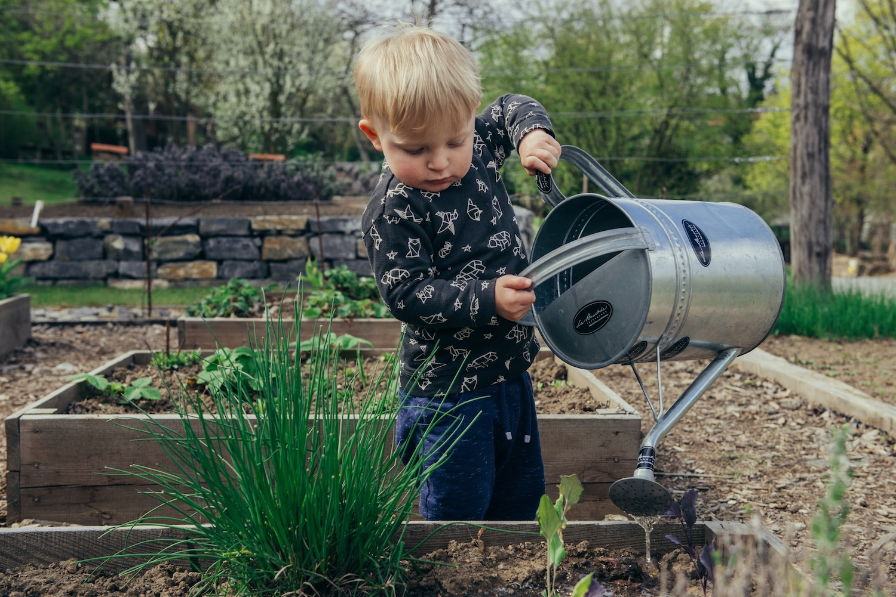

Bringing together educators, school nutrition professionals, farmers, fishers, and advocates to…
The Massachusetts Farm & Sea to School Conference is the Commonwealth's premier gathering for everyone working to connect students to local food — from the garden to the cafeteria and beyond. Held every other year, the conference brings together over 300 attendees representing the full breadth of the farm and sea to school movement.
The conference draws a diverse, highly engaged audience of practitioners, advocates, and decision-makers from across Massachusetts and the broader Northeast.

Educators, school nutrition professionals, farmers, fishers, food distributors, community organizers, policy advocates, nonprofit staff, early childhood educators, and student leaders.
We look forward to seeing YOU at our next conference in 2028!
The conference features a rich mix of formats so participants can learn from experts, hear from peers, and roll up their sleeves — all in a single day.
Each conference reflects a different moment in the farm and sea to school movement, building on the work that came before.
Sponsorship and the Exhibitor Fair activate ahead of each conference. The blocks below preview what returns for 2028.
“The conference has been a great opportunity for us to connect with new food service directors and spend time with our existing school partners. We chose to sponsor this event to gain more exposure with the farm to school network.”Annie BroadBoston Food Hub, Conference Sponsor
Fuller sponsorship content is built out in conference years.
The conference's Exhibitor Fair is open to nonprofit organizations looking to connect with a highly engaged audience of farm and sea to school practitioners.
Exhibitor tables are an affordable way to share resources, build relationships, and get your work in front of educators, food service professionals, advocates, and community partners from across the Commonwealth.
Exhibitor info returns for 2028